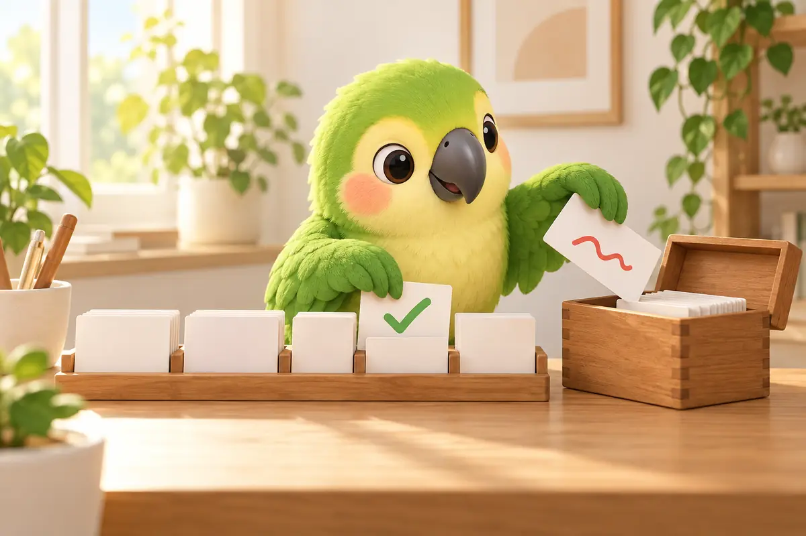
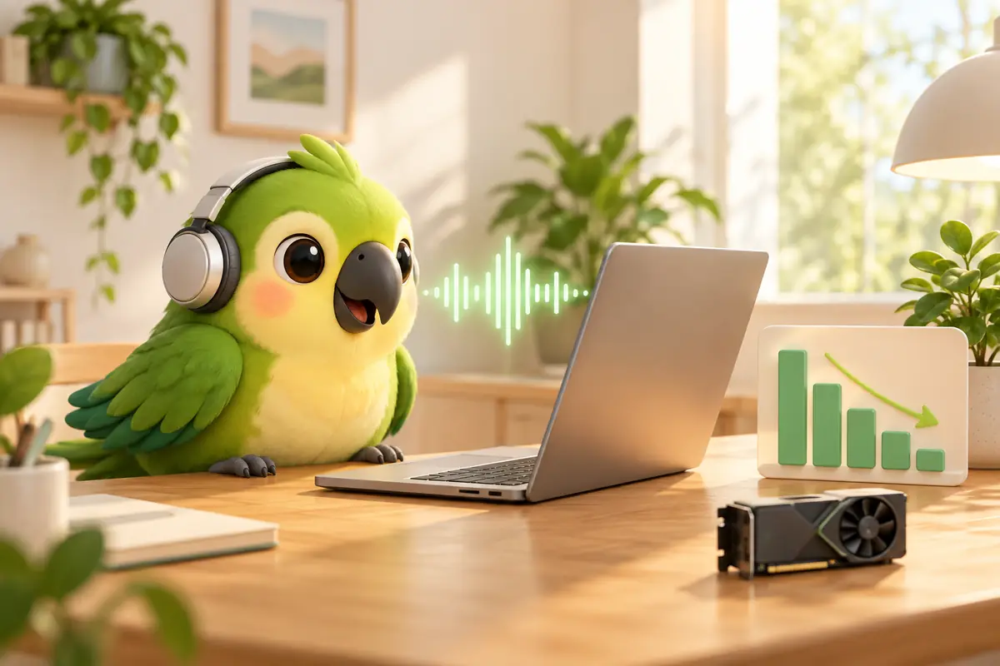

iPhoneのカメラでスキャンParroting iPhone版 · 買い切り800円
iPhoneのカメラでスキャンParroting iPhone版 · 買い切り800円
私はSona Orbitで、Parrotingを一人で開発している個人開発者です。Parrotingは本サイトの自社製品です。この記事の学習結果は私自身の声で測ったもので、1人分のデータです。誰もが同じ結果になるわけではありません。機能の説明はParroting 0.4.13に基づきます。
1. まず結論：間違いに合う方法を選ぶ
| 段階 | 直すのに向くもの | 作業する場所 | 反映まで | 直せないもの |
|---|---|---|---|---|
| 第1段階 個人辞書 | 決まった人名、製品名、英語の略語。例：Jmini → Gemini | Mac上。文字を修正した後に確認 | 次の文から反映 | 文脈で決まる同音異字（例：「在／再」＝中国語で同じ発音の別の字）。そもそも聞き取れなかった音 |
| 第2段階 口調ヒントのパーソナライズ | 友人との冗談にも反応するなど、敏感すぎるヒント | Mac上。20件のフィードバックを蓄積 | 学習は数秒。検証に通った場合だけ採用 | ヒントを出すかどうかだけを調整し、認識した文字は変えない |
| 第3段階 専用音声モデル | よく使う専門用語、アクセント、中国語と英語が混ざった発話、同音異字の選び間違い | データを書き出し、NVIDIAのGPUを搭載したパソコンで学習してMacに読み込む | 録音の準備と学習が必要 | ほかの人の声の認識精度が少し下がる |
多くの人には最初の2段階で十分です。誤字をさらに減らしたい場合に、第3段階を検討してください。
2. なぜ同じ単語を間違え続けるのか
音声認識には2つの段階があります。まず音から「どう聞こえるか」を捉え、次に同じ発音の字から一般的なものを選びます。そのため、間違いは無作為ではなく、主に次の箇所で起きます。
- 珍しい名前：「王曉明」（人名）の「曉」は「小」より一般的ではないため、モデルが「小」を選び続けます。
- 製品名と英語の専門用語：モデルが知らない語は、発音の近い形にされます。例えばGeminiがJminiになります。
- 同音異字：「我再看一次」（もう一度見る）と「我在看一次」（「再」を「在」とした誤り）は同じ発音なので、前後の文脈で判断する必要があります。
- 個人のアクセントと音のつながり：早口で音がつながると、最初の段階ですでに聞き間違えます。
最初の2つは音を捉えた後に字を選び間違えているので、辞書で直せます。後の2つはモデル自体があなたの声に慣れる必要があり、辞書では対応できません。
3. 第1段階：個人辞書
まずは、よく間違える語を記録します。認識後に誤った表記を正しい表記へ置き換えます。Parrotingの辞書はMac上で処理され、AIを使わなくても動作します。AIで話し言葉を整える機能を使う場合は、これらの語もAIに伝えます。
辞書の自動学習には問題があります。文全体を別の表現に書き換えただけなのに、ソフトが「聞き間違い」と判断し、無関係な語を辞書に入れてしまうことです。Parrotingでは次のように扱います。
- まず発音を比較：ペースト後に文字を直すと、Parrotingは修正前後の発音を比べます。発音が近い組み合わせ（例：「小明」→「曉明」。人名の表記修正）は、「パーソナライズ学習」ページの確認リストに入ります。発音が大きく異なるものは「言い換え」に分類され、辞書にも学習にも使われません。分類が違う場合は「実は聞き間違い」または「聞き間違いではなく、言い換えた」で修正できます。
- 確認したものだけを反映：リストで「辞書に追加」を押すと、次の文から反映されます。
- 手動でも追加できる：「設定」 → 「辞書と履歴」 → 「辞書」 → 「追加」で、正しい表記とよくある誤表記を入力します。CSVの読み込みも可能です（1列目が正しい表記、2列目が誤表記）。

辞書で直せないもの：辞書は「Aを見つけたらBに置き換える」仕組みです。「在／再」（中国語で文脈によって使い分ける同音異字）のように両方が使われる字は、単純に置き換えられません。早口で最初から音を捉えられなかった場合も、置き換える対象がありません。これらは第3段階で対応します。
4. 第2段階：Mac上で口調ヒントを調整
話すときは、書くときより感情が表れやすくなります。Parrotingには約11 MBの中国語用の小さな口調モデルが内蔵されています（英語用は別です）。Mac上で直前に話した文と状況（使っているAppや、それまでの会話）を読み、場面、相手、目的、丁寧さ、口調、ヒントの要否、くだけすぎていないかの7項目を一度に判断します。APIキーもネット接続も不要です。
ただし、許容する言い方は人によって違います。10年来の友人に「你這白癡，又遲到了啦」（「ばか、また遅刻したのかよ」という冗談）と言うのは、普段のやり取りかもしれません。毎回ヒントが出ると、機能を切りたくなります。そこで、この段階ではフィードバックに合わせて調整できます。
- ヒントが違うと思ったら「判定が違う」を押します。または「このAppでは通知しない」を押します。
- 20件のフィードバックで学習できます：サイドバーの「パーソナライズ学習」でフィードバックを確認し、「口調ヒントのパーソナライズ」から学習します。このMac上で数秒で終わり、元のモデルは変更されません。
- 検証に通らなければ採用できません：フィードバック5件のうち1件は学習に使わず、検証用に残します。内蔵のテスト文でも、本来ヒントを出すべき文が見逃されないか確認します。検証に失敗した場合は、以前は正しく判断できていた文が誤判定になると知らせます。
- いつでも元に戻せます：「採用」後も版の履歴が残り、前の版や元のモデルに戻せます。
この段階で変わるのは口調ヒントだけです。認識される文字の精度は上がりません。
5. 第3段階の前に：自分の認識精度を確認
モデルの学習を考える前に、Parrotingがどこを聞き間違えるか確認します。「設定」 → 「パーソナライズ学習」 → 「音読の録音」で確認できます。1回は10文、約2分です。原稿を読み、各文の後に聞き間違えた文字を確認します。最後に誤字率が表示されます。
間違いとして示された字と原稿の字が同じ発音なら、あなたの読み間違いではなく、Parrotingが字を選び間違えています。こうした間違いは辞書や専用モデルで改善できることが多いです。録音の正解は読んだ原稿なので、学習にも使えます。録音は自分で削除するまでMac上に残ります。
6. 第3段階：専用音声モデルのテスト結果
Parrotingの標準の音声認識モデルはSenseVoice Smallです。私はオープンソースの学習ツールparroting-asr-trainingを使い、LoRAで約2%のパラメータだけを微調整しました。私自身の音声入力の録音でテストし、評価には学習時に使っていない録音だけを使いました。
学習ツールでのテスト（普段の音声入力2時間、評価用263件）
| モデル | 誤字率 |
|---|---|
| 元のモデル | 6.7% |
| 学習1回目 | 4.7% |
| 学習2回目 | 5.5% |
誤字は2～3割減り、特によく使う人名、製品名、途中に入る英語で改善しました。ただし、同じ録音で2回学習した結果には、約1ポイントの差がありました。どちらの学習でも「正解」はモデル自身による文字起こしで、そこにも誤りが含まれています。そのため結果にばらつきが出ます。学習後は必ず未使用の録音で評価し、使うかどうか決める必要があります。
以前の実験：録音を増やしても改善はわずか
それ以前の2回の実験では、複数のモデルの文字起こしを比較し、AIに正解を選ばせました。こちらも人による確認はしていません。
| モデル | 学習用の録音 | 誤字率 |
|---|---|---|
| 元のモデル | — | 約5.0% |
| 第1版 | 約30分 | 約3.6% |
| 第2版 | 約2時間 | 約3.4% |
録音を4倍に増やしても、誤字率はさらに0.2ポイントしか下がりませんでした。私の結論は、録音の量より正解の正確さが重要ということです。音読の録音と、自分で確認した修正には正しい文字起こしがあるため、学習用の素材に向いています。

代償と実際に遭遇した問題
- ほかの人の声では精度が下がる：一般的なテストセット（FLEURS）では、第1版の誤字率は約0.2ポイント、第2版は約1.2ポイント上がりました。自分の声に合わせるほど、ほかの人の声には弱くなります。自分専用のMacなら見合う場合もありますが、この代償は知っておいてください。
- 英単語が重複して入力される：第1版ではGoogleがGooglegleに、emailがemailmailになる副作用がありました。第2版では大幅に減りました。学習後は誤字率を見るだけでなく、数日使って新たな不具合がないか確認してください。
- 正解は簡体字にする：繁体字の文字起こしで直接学習したところ、学習するほど精度が落ちました。SenseVoiceの語彙は簡体字が中心なので、ツールが正解を自動で簡体字に変換します。Parrotingの出力時には、使っている字体（例えば台湾で使う繁体字）に戻します。
7. 自分で学習する手順と注意点
Parroting自体は音声モデルを学習しません。NVIDIAのGPUを搭載した自分のパソコンで学習します。音声が私のところにアップロードされることもありません。
- 録音を準備：正しい文字起こしが付いた録音を少なくとも20～30分用意します。音読の録音が最も確実です。確認リストで承認した修正も使えますが、書き出すには録音が残っている必要があります。Parrotingは標準で直近300件の録音だけを保存します。増やす場合は「設定」 → 「詳細」 → 「履歴」 → 「録音の保存期間」で期間を延ばしてください。
- 書き出す：「設定」 → 「辞書と履歴」 → 「データの保存場所」 → 「自分の情報」 → 「トレーニングデータを書き出す…」から操作します（「音読の録音」のカードからも書き出せます）。
- 学習する：parroting-asr-trainingを使います（MITライセンス、説明は英語）。LinuxまたはWindowsのWSL2が必要です。8 GBのGPUで動き、RTX 4090では約8～9分です。CPUだけでも動きますが遅くなります。90分の録音なら、16コアで1回の学習に約50分かかります。学習後、ツールは評価用の録音で前後を比較し、レポートに「Use it」または「Don't use it」と明記します。
- Parrotingに読み込む：「設定」 → 「話す」 → 「音声モデルと言語」 → 「モデルを管理」 → 「モデルを読み込む…」を開きます。ParrotingはまずMac内蔵の音声でテスト文を読み上げ、新しいモデルが文字起こしできた場合だけリストに追加します。
- 前後を比較する：「モデルを管理」ウィンドウ上部の「音読の録音でテスト」を使います。音読の録音のうち評価用に残した1/5だけを使うため、学習済みの文で結果が良く見えることはありません。読み込みの前後でそれぞれ1回テストします。満足できなければ「標準モデルに戻す」を押してください。
8. よくある質問
個人辞書と口調ヒントのパーソナライズにGPUやネット接続は必要ですか？
必要ありません。この2段階はAppleシリコン搭載のMac上で完結します。ネット接続もAPIキーもGPUも不要です。第3段階の専用音声モデルだけは、NVIDIAのGPUを搭載したパソコン（または時間をかけて動かすCPU）で学習します。
録音はアップロードされますか？
されません。Parrotingの録音、音声認識、辞書、口調のパーソナライズはすべてMac上で行います。自分で「トレーニングデータを書き出す…」を押したときだけ、ファイルがParrotingの外に出ます。保存先は自分で決められます。
専用モデルを学習させなくても、Parrotingは使うほど正確になりますか？
はい。辞書の項目は確認すると次の文から反映されます。人名や製品名のような決まった間違いはよく起きますが、直しやすいものです。まず2分間の「音読の録音」を1回試し、誤字率と間違う箇所を見てから、第3段階に進むか決められます。
専用モデルの学習には、どれくらいの録音が必要ですか？
正しい文字起こしが付いた録音を、少なくとも20～30分用意します。私のテストでは、録音の量より文字起こしの正確さが重要でした。録音を4倍に増やしても、誤字率はさらに0.2ポイントしか下がりませんでした。
学習後に精度が落ちたら、元に戻せますか？
音声モデルは「モデルを管理」で「標準モデルに戻す」を押すと元に戻せます。口調ヒントのパーソナライズも、採用後いつでも前の版や元のモデルに戻せます。